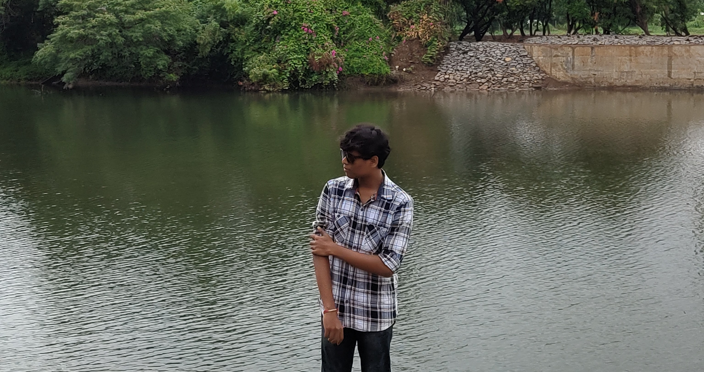

About Me
Hello! I'm Ganesh, a versatile individual with a background steeped in the competitive gaming world, where I cultivated strategic thinking, teamwork, and adaptability. Transitioning from gaming to the tech sphere, I've discovered a new passion in content creation, particularly on YouTube, where I aim to foster creativity and innovation within the tech community.
I'm eager to connect with fellow enthusiasts, professionals, and educators. Let's collaborate, exchange ideas, and embark on new learning journeys together. Feel free to reach out—I'm always open to meaningful connections and discussions aimed at driving positive change and innovation in technology.

